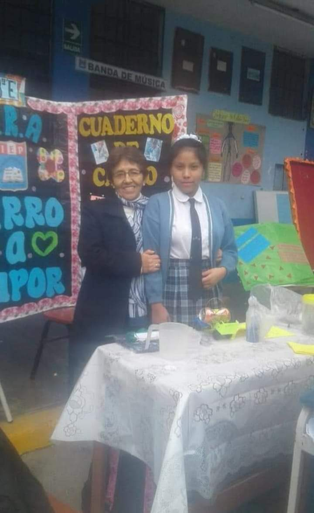

Me presento soy Abigail Nicol Sulca Jaimes una estudiante del Instituto Superior Certus de la sede Lima Norte, en esta ocasión les daré una redacción de lo que experimente en mi vida, comenzando por la primaria hasta el dia de hoy, sumando mis problemas y soluciones, sueños, y otros datos curiosos que me definen como soy.

EN LA SECUNDARIA
Al ingresar en secundaria desde el 1er hasta el 5to año, obtuve los primeros puestos y fui mencionada en el discurso de la directora. Postule para un internado académico en San Isidro por invitación de la directora, no se logró ingresar. En 3er grado fue mi luz, obtuve otra vez el 1er puesto, y destaque en recitar poemas, participe en la feria de ciencia y desde ahí Cesar Vallejo. Fui parte de la escolta general, y participe en la competencia de SUPREMACÍA INTERESCOLAR donde el ganador del evento central se iba a México, vinieron 3 jurados importantes. Donde participamos 20 en mi colegio y yo fui la única chica, yo quede en 3 puesto.
EN EL FUTURO
Viajar para mejorar en las competencias de rap es una de las partes que complementan un sueño imposible, donde quisiera representar el país en ese tema, y dejar huellas permanentes en las competencias. Sin dejar los estudios a un lado, seria culminar mi carrera en Certus con notas admirables y traspasarme a la UTP, donde culminaria mi carrera universitaria y poder conseguir un trabajo que reuna estas caracteristicas: seguro, buen sueldo, beneficios, comodidad, superacion y opotunidades. Tal vez en el transcurso de tiempo actual puedan cambiar las cosas, debido a problemas familiares o de incomprension.
En 2do grado me esforzaba para obtener un diploma y ponerlo en mi sala, y logré obtener el 1er puesto de todo el grado, y fui mencionada en el discurso de la directora frente a todos los estudiantes y padres de familia, pero lastimosamente desde ese año dejaron de dar diplomas. Pero paso al más importante, por obtener el primer puesto la directora cito a mis padres para mencionarles algo que tal vez me cambie de vida. Era que estaba registrada para participar en un examen de ingreso (eran dos exámenes), para ingresar a un internado académico en San Isidro, postule, pero no pase el examen ya que eran dos, pero creo que fue algo bueno, porque gracias a no ingresar pude conocer un ambiente hermoso donde me dio motivos de seguir adelante. San Marcos me premiaba dándome media beca para capacitarme en suis instalaciones.
En 3er grado de secundaria como comenté participe en la feria de ciencia donde construí un carro a vapor incluyendo mi exposición y mural hecho por mí, a tales estudiantes de otras áreas se quedaron impactados y querían verlo en acción. Un grupo profesional de la Cesar Vallejo admiraron mi proyecto y me dieron un polo con su estampado de la universidad, desde ahí la Cesar Vallejo me empezó a incluir en sus reuniones y postulaciones, pero no estaba interesada en el mundo universitario aún.